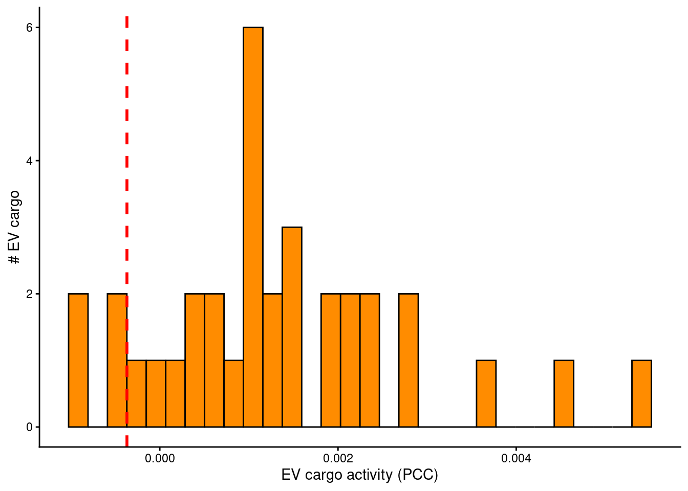
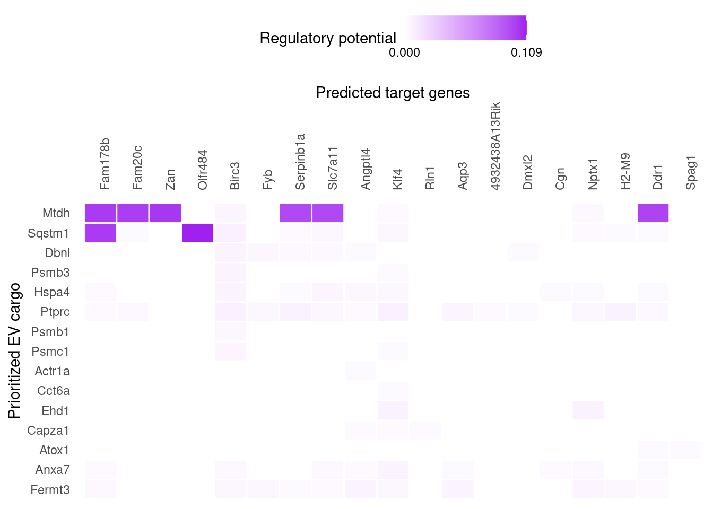

library(Seurat)
library(SeuratObject)
library(tidyverse)
library(dplyr)
library(here)Warning in readLines(f, n): incomplete final line found on
'/home/estefaniatn/embo/EV-Net/DESCRIPTION'This use case explores the effects of EV cargo derived from LPS-treated microglia on healthy microglia.
library(Seurat)
library(SeuratObject)
library(tidyverse)
library(dplyr)
library(here)Warning in readLines(f, n): incomplete final line found on
'/home/estefaniatn/embo/EV-Net/DESCRIPTION'The dataset used in this vignette originates from Santiago et al. (2023), “Identification of State-Specific Proteomic and Transcriptomic Signatures of Microglia-Derived Extracellular Vesicles.” It comprises EVs proteomics data from LPS-stimulated microglia and RNA-seq data from recipient (healthy) microglia exposed to these EVs.
LPS_microglia_EVs <- read.csv(url("https://zenodo.org/records/17391831/files/LPS_microglia_EVs.csv?download=1"), stringsAsFactors = FALSE)LPS_EV_cargo <- LPS_microglia_EVs %>%
filter(diff.LPS.Control > 0, Pr..F. < 0.1) %>%
pull(X)receiving_microglia_expression <- readRDS(url("https://zenodo.org/records/17581185/files/receiving_microglia_expression.rds?download=1"))expressed_genes_receiver <- receiving_microglia_expression$UniProtoptions(timeout = 600)
organism <- "mouse"
if(organism == "human"){
lr_network <- readRDS(url("https://zenodo.org/record/7074291/files/lr_network_human_21122021.rds"))
weighted_networks <- readRDS(url("https://zenodo.org/record/7074291/files/weighted_networks_nsga2r_final.rds?download=1"))
} else if(organism == "mouse"){
lr_network <- readRDS(url("https://zenodo.org/record/7074291/files/lr_network_mouse_21122021.rds"))
weighted_networks <- readRDS(url("https://zenodo.org/record/7074291/files/weighted_networks_nsga2r_final_mouse.rds?download=1"))
}
lr_network <- lr_network %>% distinct(from, to)
head(lr_network)# A tibble: 6 × 2
from to
<chr> <chr>
1 2300002M23Rik Ddr1
2 2610528A11Rik Gpr15
3 9530003J23Rik Itgal
4 a Atrn
5 a F11r
6 a Mc1r Download it from https://zenodo.org/records/15019664/files/EV_cargo_target_matrix.rds and load it into your R environment.
EV_cargo_target_matrix <- readRDS("~/embo/Netiev/EV_cargo_target_matrix.rds")
#Replace file path with the path in which you stored the EV_cargo_target_matrix rds fileIn this step, we identify expressed interactors, which are all proteins expressed in the receiving cell populations, including receptors, downstream signaling proteins, and transcription factors, that could potentially interact with the potential EV cargo (actual EV cargo will be defined in a following step). These expressed interactors will be used to link EV cargo to target genes in downstream analyses.
all_genes <- unique(rownames(EV_cargo_target_matrix))
expressed_interactors <- intersect(all_genes, expressed_genes_receiver)
lr_sig <- weighted_networks[["lr_sig"]]
gr <- weighted_networks[["gr"]]
potential_EV_cargo_prot <- lr_sig[lr_sig$to %in% expressed_interactors, "from"]
potential_EV_cargo_tf <- gr[gr$to %in% expressed_interactors, "from"]
potential_EV_cargo <- unique(c(potential_EV_cargo_prot$from, potential_EV_cargo_tf$from))The EV_cargo_target_matrix is large (3.6 GB). If your system has limited RAM, it is recommended to filter the matrix to keep only the expressed genes in the receiver and the potential EV cargo, which significantly reduces its size. This step is optional for systems with 32 GB of RAM or more.
EV_cargo_target_matrix <- EV_cargo_target_matrix[rownames(EV_cargo_target_matrix) %in% expressed_genes_receiver, colnames(EV_cargo_target_matrix) %in% potential_EV_cargo]Release memory using the garbage collector
gc() used (Mb) gc trigger (Mb) max used (Mb)
Ncells 3880052 207.3 7397445 395.1 5149212 275.0
Vcells 222054827 1694.2 642756220 4903.9 667876114 5095.5To define the gene set of interest, we select the genes with an adjust pvalue padj < 0.1 and an average log2 fold change (avg_log2FC) ≥ 0.25.
geneset_oi <- receiving_microglia_expression %>%
filter(padj < 0.1 & abs(log2FoldChange) >= 0.25) %>%
pull(UniProt)geneset_oi <- geneset_oi %>% .[. %in% rownames(EV_cargo_target_matrix)]Background genes are all genes expressed in the receiving cell populations. They provide a reference set for statistical analyses and enrichment calculations.
background_expressed_genes <- expressed_genes_receiver %>% .[. %in% rownames(EV_cargo_target_matrix)]The final set of EV cargo is obtained by selecting proteins that are present in both the actual LPS-derived microglia EV cargo and the list of potential EV cargo (obtained in step 7). This ensures that we focus on proteins that are differentially abundant in the LPS-activated condition and that may influence the expressed genes in the receiving microglia.
EV_cargo <- intersect(potential_EV_cargo, LPS_EV_cargo)EV_cargo_activities <- predict_EV_cargo_activities(geneset = geneset_oi,
background_expressed_genes = background_expressed_genes,
EV_cargo_target_matrix = EV_cargo_target_matrix,
potential_EV_cargo = EV_cargo)
EV_cargo_activities <- EV_cargo_activities %>% arrange(-aupr_corrected) %>% mutate(rank = rank(desc(aupr_corrected)))
EV_cargo_activities# A tibble: 34 × 6
test_EV_cargo auroc aupr aupr_corrected pearson rank
<chr> <dbl> <dbl> <dbl> <dbl> <dbl>
1 Mtdh 0.524 0.0143 0.00541 0.0385 1
2 Sqstm1 0.503 0.0135 0.00453 0.00578 2
3 Dbnl 0.500 0.0127 0.00371 0.0104 3
4 Psmb3 0.497 0.0117 0.00274 0.0102 4
5 Hspa4 0.521 0.0117 0.00274 0.00571 5
6 Ptprc 0.538 0.0114 0.00242 0.00635 6
7 Psmb1 0.480 0.0112 0.00226 0.00155 7
8 Psmc1 0.496 0.0112 0.00224 0.00783 8
9 Actr1a 0.493 0.0110 0.00207 0.000736 9
10 Ptgr1 0.537 0.0109 0.00198 0.0154 10
# ℹ 24 more rowsp_hist_EV_cargo_activity <- ggplot(EV_cargo_activities, aes(x=aupr_corrected)) +
geom_histogram(color="black", fill="darkorange") +
geom_vline(aes(xintercept=min(EV_cargo_activities %>% top_n(30, aupr_corrected) %>% pull(aupr_corrected))),
color="red", linetype="dashed", size=1) +
labs(x="EV cargo activity (PCC)", y = "# EV cargo") +
theme_classic()Warning: Using `size` aesthetic for lines was deprecated in ggplot2 3.4.0.
ℹ Please use `linewidth` instead.p_hist_EV_cargo_activity
Note: We have selected the top 30
best_upstream_EV_cargobut this number can be changed.
best_upstream_EV_cargo <- EV_cargo_activities %>% top_n(30, aupr_corrected) %>% arrange(-aupr_corrected) %>% pull(test_EV_cargo)
vis_EV_cargo_aupr <- EV_cargo_activities %>% filter(test_EV_cargo %in% best_upstream_EV_cargo) %>%
column_to_rownames("test_EV_cargo") %>% select(aupr_corrected) %>% arrange(aupr_corrected) %>% as.matrix(ncol = 1)
(make_heatmap_ggplot(vis_EV_cargo_aupr,
"Prioritized EV cargo", "EV cargo activity",
legend_title = "AUPR", color = "darkorange") +
theme(axis.text.x.top = element_blank())) Warning: The `size` argument of `element_line()` is deprecated as of ggplot2 3.4.0.
ℹ Please use the `linewidth` argument instead.
active_EV_cargo_target_links_df <- best_upstream_EV_cargo %>%
lapply(get_weighted_EV_cargo_target_links,
geneset = geneset_oi,
EV_cargo_target_matrix = EV_cargo_target_matrix,
n = 80) %>%
bind_rows() %>% drop_na()active_EV_cargo_target_links <- prepare_EV_cargo_target_visualization(
EV_cargo_target_df = active_EV_cargo_target_links_df,
EV_cargo_target_matrix = EV_cargo_target_matrix,
cutoff = 0.5) order_EV_cargo <- intersect(best_upstream_EV_cargo, colnames(active_EV_cargo_target_links)) %>% rev()
order_targets <- active_EV_cargo_target_links_df$target %>% unique() %>% intersect(rownames(active_EV_cargo_target_links))
vis_EV_cargo_target <- t(active_EV_cargo_target_links[order_targets,order_EV_cargo])
target_genes_heatmap <- make_heatmap_ggplot(vis_EV_cargo_target, "Prioritized EV cargo", "Predicted target genes",
color = "purple", legend_title = "Regulatory potential") +
scale_fill_gradient2(low = "whitesmoke", high = "purple")target_genes_heatmap
png("target_genes_heatmap_microglia_EV_cargo_RNAseq.png", res = 300, width = 5000, height = 2000)
print(target_genes_heatmap)Next we will build an interaction network between one of the top-ranked EV cargo: the Mtdh protein, and two of its targets, with biological relevance for inflammation: Ddr1 and Slc7a11 (choice was made after studying the target_genes_heatmap).
Loading Nichenet’s sig_network and gr_network from zenodo
sig_network <- readRDS(url("https://zenodo.org/records/7074291/files/signaling_network_mouse_21122021.rds"))
gr_network <- readRDS(url("https://zenodo.org/records/7074291/files/gr_network_mouse_21122021.rds"))Inferring EV_cargo-to-target signaling paths
EV_cargo_oi <- "Mtdh"
targets_oi <- c("Ddr1", "Slc7a11")
active_signaling_network <- get_EV_cargo_signaling_path(EV_cargo_all = EV_cargo_oi,
targets_all = targets_oi,
weighted_networks = weighted_networks,
EV_cargo_tf_matrix = EV_cargo_target_matrix,
top_n_regulators = 3,
minmax_scaling = TRUE) Warning in igraph::shortest_paths(signaling_igraph, from = EV_cargo_oi, : At
vendor/cigraph/src/paths/dijkstra.c:534 : Couldn't reach some vertices.graph_min_max <- diagrammer_format_signaling_graph(signaling_graph_list = active_signaling_network,
EV_cargo_all = EV_cargo_oi, targets_all = targets_oi,
sig_color = "indianred", gr_color = "steelblue")
DiagrammeR::render_graph(graph_min_max, layout = "tree")# To export/draw the svg, you need to install DiagrammeRsvg
#graph_svg <- DiagrammeRsvg::export_svg(DiagrammeR::render_graph(graph_min_max, layout = "tree", output = "graph"))
#cowplot::ggdraw() + cowplot::draw_image(charToRaw(graph_svg))Optional: Create a dataframe with annotations of collected data sources supporting the interactions in this network.
data_source_network <- infer_supporting_datasources(signaling_graph_list = active_signaling_network,
lr_network = lr_network, sig_network = sig_network, gr_network = gr_network)
head(data_source_network) # A tibble: 6 × 5
from to source database layer
<chr> <chr> <chr> <chr> <chr>
1 Cebpd Slc7a11 harmonizome_CHEA harmonizome_gr regu…
2 Cebpd Slc7a11 harmonizome_ENCODE harmonizome_gr regu…
3 Cebpd Slc7a11 harmonizome_TRANSFAC_CUR harmonizome_gr regu…
4 Cebpd Slc7a11 pathwaycommons_controls_expression_of pathwaycommons_expr… regu…
5 Cebpd Slc7a11 KnockTF KnockTF regu…
6 Il1b Ddr1 NicheNet_LT_infrequent NicheNet_LT regu…